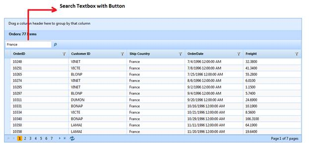

To dynamically bind data to the grid through GridPropertiesModel:
1. Create a model in the application (Refer to Getting Started > Adding a Model to the Application).
2. Add the following code in the Index.aspx file to create the Grid control in the view.
|
[ASPX] <%=Html.Syncfusion().Grid<Order>("SearchingGrid", "GridModel", column => { column.Add(p => p.OrderID).HeaderText("Order ID"); column.Add(p => p.CustomerID).HeaderText("Customer ID"); column.Add(p => p.ShipCountry).HeaderText("Ship Country"); column.Add(p => p.OrderDate).HeaderText("Order Date").Format("{OrderDate:dd/MM/yyyy}"); column.Add(p => p.Freight).HeaderText("Price").Format("{0:c}"); })%>
|
|
[Razor]
@(Html.Syncfusion().Grid<Order>("SearchingGrid", "GridModel", column => { column.Add(p => p.OrderID).HeaderText("Order ID"); column.Add(p => p.CustomerID).HeaderText("Customer ID"); column.Add(p => p.ShipCountry).HeaderText("Ship Country"); column.Add(p => p.OrderDate).HeaderText("Order Date").Format("{OrderDate:dd/MM/yyyy}"); column.Add(p => p.Freight).HeaderText("Price").Format("{0:c}"); })) |
· If you want to enable or disable the filtering options for individual columns, then use the AllowSearching(bool) method in column mapping.
|
View [ASPX]
<%=Html.Syncfusion().Grid<Order>("SearchingGrid","GridModel", columns => { |
|
View [cshtml]
@(Html.Syncfusion().Grid<Order>("SearchingGrid","GridModel", columns => { |
3. Create a GridPropertiesModel in the Index actions.
|
Controller
GridPropertiesModel<EditableOrder> model = new GridPropertiesModel<EditableOrder>() { DataSource = OrderRepository.GetAllRecords(), Caption = "Orders", // set AllowSearching as true to activate searching feature. AllowSearching = true, AutoFormat=Skins.Sandune };
ViewData["GridModel"] = model; // Pass the model from controller to view using ViewData. |
· Essential Grid allows searching records through grid toolbar items. In this example, Search button has been added as toolbar items in the code sample displayed below.
|
Controller // Configure the toolbar. ToolbarSettings toolbar = new ToolbarSettings();
toolbar.Enable = true;
// Add the add new, edit, delete, save, cancel button in toolbar.
toolbar.Items.Add(new ToolbarOptions() { ItemType= GridToolBarItems.Search}); model.ToolBar = toolbar;
|
4. Run the application, The Grid will appear as shown below:

Figure 130: Searching through GridPropertiesModel
Sample Link
To view the samples, follow the steps below:
1. Open the Essential Grid sample browser from the dashboard. (Refer to the Samples and Location chapter)
2. Navigate to Grid.MVC > Filtering > Searching